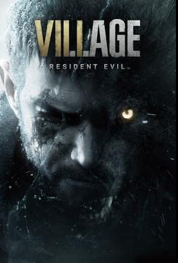
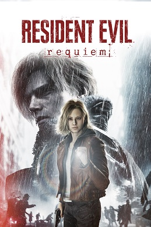

jogos zerados 2026
GTA 5
Zerei dia 24 de Janeiro pela 3° vez, não preciso falar muito aqui, é um clássico dos video games, é o GTA com mais conteudo da saga, tem tudo quanto é veiculo, seja aereo, terrestre, aquatico, etc. Tem 3 protagonistas que podem ser selecionados a qualquer momento no mundo aberto, fora as missões que tem as participações dos 3, tem uma historia muito questionavel, porem divertida, eu ainda racho de rir com as cutscenes que tem o Trevor, o Michael é um ótimo protagonista pra saga, sendo frio e fazendo de tudo para se dar bem, nem que isso custe a vida de algumas pessoas e o Franklyn só existe ali no meio, enfim, é um jogaço.

nota do jogo: 10
Plataformas disponíveis:
Xbox 360, Xbox One, Xbox Series S/X, PS3, PS4, PS5, PC
The Legend Of Zelda: Breath of The Wild
Zerei dia 01 de Fevereiro depois de mais de 55 horas jogadas, esse é um dos melhores jogos mundo aberto que já joguei, a forma que você progride, explora, descobre cidades, tumbas, ilhas e vai ficando mais forte sem quebrar o jogo, é genial, TUDO que você faz aqui te dá uma recompensa ou te leva à alguma quest secreta ou item escondido, deu até uma dó no coração finalizar esse jogo, mas o que me reconforta é saber que ainda tenho o Tears Of Kingdow para jogar. Eu diria que o maior defeito desse jogo é a baixa variedade de inimigos, porem o jogo equilibra isso com a vasta liberdade de exploração que ele te dá.

nota do jogo: 10
Plataformas disponíveis:
Nintendo Switch, Nintendo WII U
Resident Evil 8
Zerei dia 07 de Fevereiro como aquecimento para o RE Requiem, Resident evil 8 definitivamente não é um dos meus favoritos, acho a gameplay do jogo básica demais, os chefões do jogo são muito buchas (com exceção da Dona Beneviento), aqueles lobisomens malditos que não stunam nunca, a plot da mãe Miranda querer ressucitar a filha dela e ficar brincando de casinha com o Ethan sabe se lá Deus por quanto tempo, e tem o Ethan tambem, o cara no resident evil 7 funciona muito bem, agora aqui? Tá perdidaço no rolê, a única coisa que gostei foi a volta da maleta e do mercante, que nesse caso é o Duke, não é um jogo ruim, mas não quero zerar ele de novo.

nota do jogo: 7
Plataformas disponíveis:
Xbox One, Xbox Series S/X, PS4, PS5, PC
Resident Evil 9
Zerei dia 01 de Março, gostei muito do que a Capcom fez nesse jogo, ele tem muito terror com a Grace e muita ação com o Leon, a gameplay com cada personagem é bem diferente, até parece que eu troquei de jogo, a parte da Grace foi muito legal de jogar, bem tensa e atmosferica, a parte do Leon foi bem gratificante macetar todos os zumbis que me amedontraram durante a parte da Grace, a historia foi padrao resident evil, divertida e cafona, a parte que menos gostei bem o excesso de fan service que tem no jogo, nem todo fan service é bom, eu acho que esse jogo acerta em uns 80% nisso, tambem acho que deveria ter um pouco mais de variedade de armas com a Grace, pelo menos uma Doze já seria bom.

nota do jogo: 9
Plataformas disponíveis:
Xbox Series S/X, PS5, PC
Super Mario 3D World
Zerei dia 06 de Março, esse jogo é muito bom, tem 4 personagens jogaveis cada um com suas caracteristicas, exemplo: o Luigi pula mais alto mas é desengonçado, a Princessa pula mais baixo so que ela consegue planar, etc. Existem 4 trajes diferentes no jogo, a folhinha, o gatinho, o bumerangue e a flor de fogo, confesso que gostaria da roupa de sapo e tanuki de volta. Esse jogo não tem a aparição do Yoshi, pelos menos não nos 8 mundos necessaários para zerar o jogo, na verdade, esse jogo parece mais um super mario bros 3 + super mario 2 em 3D, so que um Mario World em si, ele não ruim, é bem divertido e ainda tem o multiplayer para 4 pessoas simultaneas, mas eu estava esperando um jogo com mais exploração dentro das fases, fases com multiplas saidas, etc. Mas é um bom jogo para se jogar com a familia e amigos.

nota do jogo: 8
Plataformas disponíveis:
Nintendo Switch, Nintendo WII U
Sniper Elite 4
Zerei no dia 19 de Março com mais ou menos 10 horas de gameplay, gostei muito desse Sniper Slite, ele evoluiu bastante coisa do 3° jogo, mas infelizmente ele fica muito repetitivo da 5°, 6° fase pra frente. Se ele fosse um pouco mais curto ou tivesse fases com objetivos mais variados, poderia se tornar um dos grandes jogos da era do PS4 e XBOX one. Mas ainda é um bom jogo.

nota do jogo: 7,5
Plataformas disponíveis:
PS4, PS5, XBOX ONE, XBOX SERIES S/X, NINTENDO SWITCH, PC
GTA 3
Zerei em Abril para fazer a saga GTA no canal, não é um jogo ruim, mas definitivamente envelheceu meio mal em comparação com os outros GTAs, tem muita missão repetitiva, momentos frustantes e qualidades de vida que não existem simplesmente porque a Groove Street Games não quis colocar, como por exemplo os Checkpints nas missões.

nota do jogo: 6,5
Plataformas disponíveis:
PS2, PS4, PS5, XBOX clássico, XBOX ONE, XBOX SERIES S/X, NINTENDO SWITCH, PC
Resident Evil 1
Zerei em Abril pro canal, foi uma experiência e gratificante, não é atoa que ele é chamado como o pai dos Survivor Horrors. Mas algumas coisas nele envelheceram mal, como não poder ficar o personagem rapidamente, ter que mirar manualmente tambem é bem chato e as campanhas do Chris e da Jill são praticamente as mesmas. Quando eu tenho vontade de jogar RE1, eu sempre vou no remake que é melhor em praticamente em todos os aspectos.
_capa.jpeg)
nota do jogo: 9
Plataformas disponíveis:
PS1, Sega Saturn
Resident Evil 2
Zerei em Abril para o canal, esse jogo é uma das maiores evoluções que eu já vi de um jogo para o outro, ele melhora praticamente tudo do Resident evil 1, adiciona uma campanha para cada personagem e tambem um caminho A e B, que são bem diferentes entre si, tambem tem muito mais zumbis e monstros diferentes em tela, armas mais variadas e uma atuação de voz um pouquinho melhor. Algumas coisas ainda ficaram datadas como não poder virar rápido e a mira não ser automática, mas você se acostuma com o tempo. Ainda vale a pena experimentar esse aqui, mesmo com o Remake já lançado.

nota do jogo: 10
Plataformas disponíveis:
PS1, PS4. PS5, DreamCast, GameCube, Nintendo 64
Resident Evil 3 Remake
Zerei em Maio para o canal, esse jogo aqui é cumulo da preguiça, removeu uns 70% do conteudo do clássico e não adicionou praticamente nada, muitas coisas interessantes do clássicos simplesmente sumiram, como por exemplo o fabricador de munição, escolhas durante a campanha, armas que podemos montar com peças do Nemesis, etc. Ele não é um jogo ruim, mas é muito inferior ao clássico e tambem aos outros remakes da Capcom.

nota do jogo: 6,5
Plataformas disponíveis:
PS4, PS5, XBOX ONE, XBOX SERIES S/X, PC
Star Wars Jedi: Fallen Order
Zerei em Maio para o canal, foi uma experiencia muito divertida, eu nunca vi nenhum filme da franquia star wars e consegui entender perfeitamente a historia do jogo, que é muito boa. A gameplay tambem não fica muito pra trás não, você sempre está ficando mais forte e aprendendo novas habilidades, aconteceu alguns bugs comigo, mas nada que me fez perder progresso ou algo do tipo, gostei demais.

nota do jogo: 9
Plataformas disponíveis:
PS4, PS5, XBOX ONE, XBOX SERIES S/X, PC